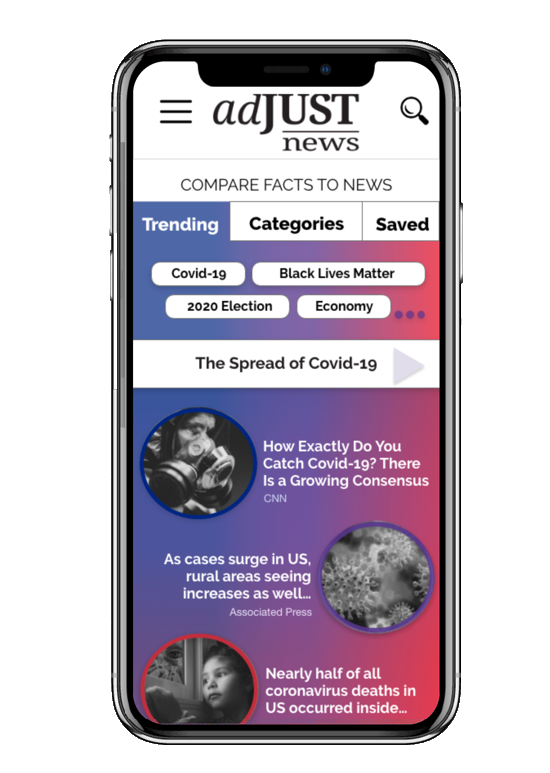
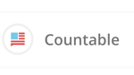
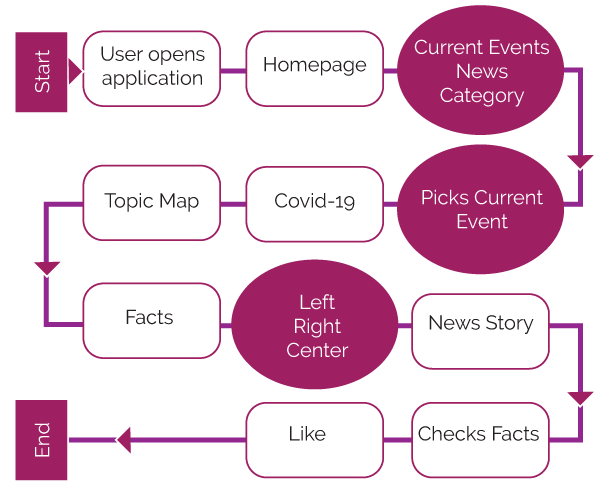

A news application with a comparative political twist!
With the current chaos of everyday news its hard to keep up with whats happening and how to know if a source is truthful. News stories through social media can be helpful, but a lot of times its a spread of misinformation or biased towards a certain party. This app is for an audience who cares about the world, but wishes they could just see the facts, see every side to the topic, and then make up their own mind about it.
Find YOUR view!
adJUST news is an app that give users the opportunity to have a go-to source for topics where they can compare facts to news stories. This way users can make up their own minds and choose what they want to believe regarding each topic.
By offering facts and categorized news stories by political party, users will be able to construct their own thoughts and determine their own beliefs. This saves the user time by not having to research through multiple news channels and gives them the structure to see where each news source stands politically.
The goal of this application is to cut down on confusion, shed light on the missing gaps between parties, and be an informative place that people can depend on. By being an all in one spot for current issues, the hope is that people will not only find their own voice, but find a way to come together as well.

Questions and thoughts before starting:
- How will the app compare facts to new stories?
- How will this app be designed to bring unity instead of divisiveness?
- What will the users expect to see while using the app?
- I will need to create an eye catching design so the user doesn’t see it as just another news source.
- Where will I find a reliable source of where news outlets stand on political issues?
- How will I pull facts for each political point of view on topics?
Similar Apps and Features
|
|
 |
 |
- Finds where the user fits on the political spectrum
- Real time election polls
- Information on upcoming elections
- Share to friends and family (spread the word)
- Find candidates that share your view
- Answer policy questions / see what others are thinking
- Links to users public voting record
|
- Rates news media bias
- Categorizes new stories into political sections
- Explains bias, provides charts, and how to spot bias
- Topics & Issues (hot topics & recommended)
- Provides a “balanced” search option
- Facts & fact checking
- Perspectives blog
- Helps connect and guide people through conversations
- Red blue dictionary
- Helps prepare students about bias
|
- Take sides on issues
- Gives personalized campaign recommendations
- Gives updates on congress movements
- Sign petitions
- Share via social network
- Provides grades of representatives
- Form a “brigade” with friends
|
- Your Representatives
- Take Action (shows how a user can help by category)
- News
- Vote
- Countdown time until election
- Presents who is up for re-election
- Campaigns included to show how to call your senator
|
|  |
|
 |
 |
- Summarizes house and senate Bills
- Gives pro vs con arguments
- Impact
- Legislation costs
- Vote on bills
- Email members of congress
- Voting comparison of representatives
|
- Gives facts by state, issue, people, media, campaign
- Truth-o-meter
- Promises made by presidents
- Percentage score card of truth
- Quotes
- Latest articles
|
- Game to guess if a news story is true or not
- Compares users political awareness to other users
- Uses surveys to build their platforms
|
- Local News
- Live election results
- News headlines by category/topic
- Browse headlines quickly
- Allows the users to choose news outles on their profile
|
Target Audience and User
To create a target user and audience, I referenced articles such as Politifacts "A closer look at turnout, young voters..." as well as articles taking a in depth look at independent voters. The Conversation and the Gallop.com were great resources for the independent view. In addition to this research, I took the main target profile of a social media user and interlaced the information with a politcally independent, and/or leaning viewers perpective.
Features Needed
- Facts/Fact checker
- News headlines by topic
- Supporters of each topic
- Local news
- Able to “Like” a political viewpoint
- Show where the user is on a political scale
- Summary of the political viewpoint
- Map of where news outlets fall on a political scale
User Flow
Userflow Description: The user wants to learn about covid-19 and the effects of opening up the economy vs the stay at home order.

Source Scale
To research where news outlets fall on a political scale, I came across the University of Michigan’s research paper, where they mentioned Allsides website and patented bias rating system.
Through Allsides system, finding other articles like Thoughtco’s “Top 9 Conservative News and Opinion Websites” and Ad Fontes Media chart, I was able to get a general Idea of where the news would stand politically.
Photo Credit: “Static MBC,” Ad Fontes Media, June 19, 2020, https://www.adfontesmedia.com/static-mbc/.
Round One - Expected Features
Before creating a user flow or prototype, I interviewed people who would potentially fall into the target audience. With their answers and research on existing application, I was able to compile a list of features that I would need to implement in the prototype moving forward.
Question: What features would you expect to see in an all in one news application where you could get caught up on current events, see comparative party views and be able to make up your own mind on the subject without being persuaded by a political narrative?

Features Needed
- Facts/Fact checker
- News headlines by topic
- Supporters of each topic
- Local news
- Able to “Like” a political viewpoint
- Show where the user is on a political scale
- Summary of the political viewpoint
- Map of where news outlets fall on a political scale
Round Two - Paper Prototype
Key Findings
- Put news stories on front page
- Change naming structure of left, right and center
- Change the name of "topic map"
- Put in shades of blue, red and purple to know the political scale
Round Three - XD Prototype - First Draft
Key Findings
- Create more sections on the homepage
- Make tabs for facts, left, center and right more prominent
- Prompt or enticement for the source scale button/page
- “Back to chart” button once the user expands a tab
- Balance out space a better
- Prompt an expansion option
- Take off facts referenced section on other tabs
- Add a dislike option for user
- Add a prompt for the source scale
Round Four - XD Prototype - Second & Third Draft
After updating the prototype from round three, I was able to restructure the app and add in the color scheme. From this point I updated app using feedback from my design peers.
Key Findings
- Add in trending topics
- Incorporate photographs
- Highlight the trending news story on the stories page
- Restructure the viewpoint pages
- Update the source scale bar as a gradient
Round Five - Clickable Prototype - First Draft
For the clickable prototype round, I wanted to see how users naturally tested the application without questions to prompt a response. I asked a handful of people to test out the application and give me their feedback on the flow of the app. This ended up being beneficial because I wasn't sure which areas needed tweaking. By getting the users natural reaction to each section I could see where any faults were.
Key Findings
- Change background color as the blue could be seen as leaning democratic
- The color rings around the news article to indicate the ‘bias’ of the article is hard to see
- The “source scale” needs clarity
- If something is 98% true, is it misleading?
- Consider adding the source for the stories
Round Six - Clickable Prototype - Second Draft
For the final round of testing, I had a subject matter expert in UX design go through the clickable prototype.
Key Findings
- Don’t need the user profile on the home page
- Show there are more trending topics or limit
- Test with users if saved needs to be a primary option
- Rethink my hierarchy structure based on comparison premise
- Restructure source vs news title
- Only need one path to the Home page
- The tab structure changes from home page to the rest of the app
- Look at PP spacing & guidelines
- Play with arrows so the weight isn’t as heavy
- Take away the over lap of the news article circles
- Differentiate between quoted facts and news story headlines
- Put the notification within the check facts boundary box
- Change ring to show percentage of truth
- Take away spacing between title and content
- Update structure of social icons
About
Who we are and what we do.
About
Who we are and what we do.